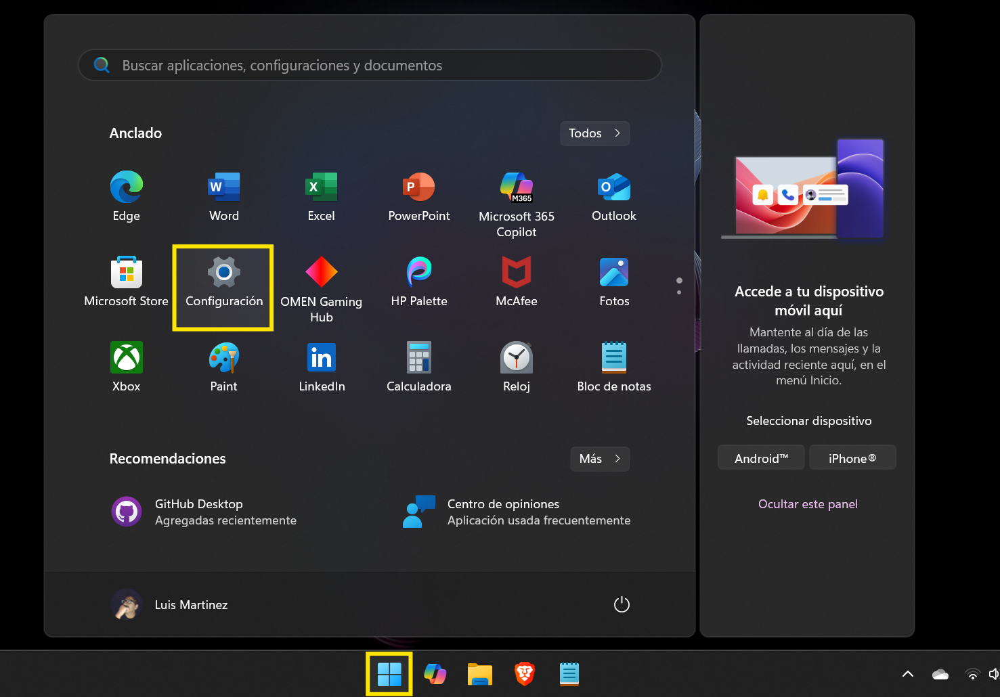
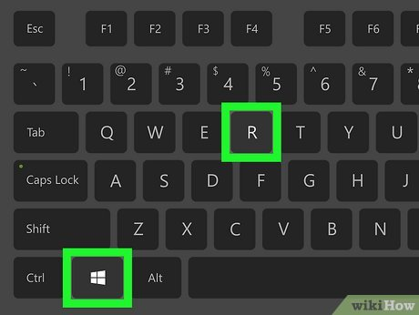

Cómo encontrar la dirección IP del equipo
Identifica la IP de la computadora en la red.
Opción 1: método visual (con menús)
Si prefiere utilizar el ratón y las ventanas de Windows.
1. Dé clic en el menú "Inicio" y seleccione "Configuración".

↓
2. En la nueva ventana, dé clic en "Red e Internet".
↓
3. Seleccione "Wi-Fi" o "Ethernet" y dé clic en "Propiedades".
↓
4. Busque el número junto a "Dirección IPv4".
Opción 2: método alternativo (PowerShell)
Una herramienta más moderna que suele estar disponible.
1. En el menú "Inicio", escriba
PowerShell y dé clic en la aplicación.
↓
2. En la ventana azul, escriba
Get-NetIPAddress y presione "Enter".↓
3. Aparecerá una lista. Busque el número en la columna "IPAddress".
Opción 3: método clásico (CMD)
Este método podría estar deshabilitado en algunos equipos.
1. Presione al mismo tiempo las teclas Win + R.

↓
2. En la ventana que aparece, escriba
cmd y dé clic en "Aceptar".
↓
3. En la ventana negra, escriba
ipconfig y presione "Enter".↓
4. Busque el texto "Dirección IPv4". Ese es el número que necesita.
¿Qué sucede si el equipo tiene restricciones?
No se preocupe. Estos métodos son de consulta y no modifican el sistema, por lo que casi nunca están bloqueados. La probabilidad de que funcionen es altísima.
99%
Tasa de éxito estimada